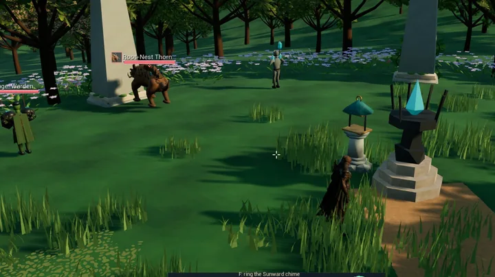
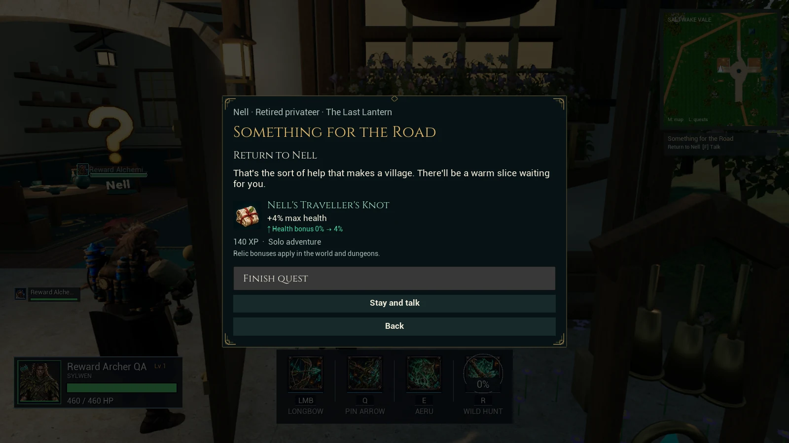
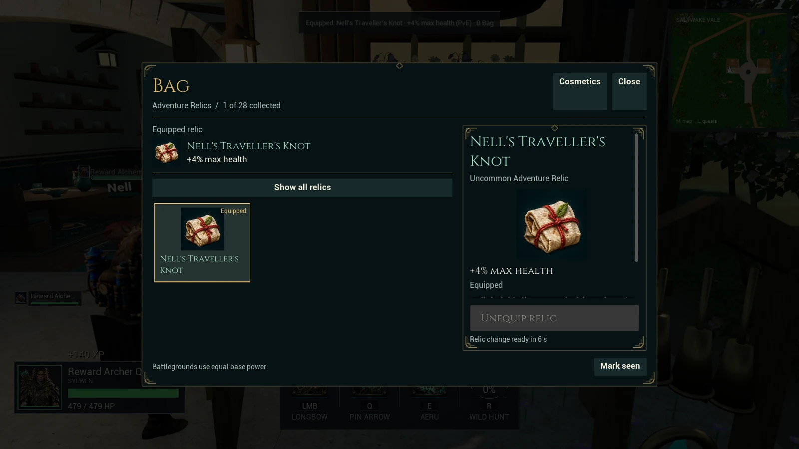

Saltwake Vale · Guía del Playtest
Tu primera reliquia en Saltwake
Nell, una corsaria retirada, está horneando para quienes pasan por el valle. Ayúdala a recoger tres manzanas y te dará un recuerdo para el viaje. Puedes hacerlo por tu cuenta o recorrer el huerto con un amigo.
Unirme gratis en Steam Ya lo instalé · Abrir el juegoPara PC con Windows. El juego está en inglés. Los nombres en negrita coinciden con los que verás en pantalla.

Del pueblo al huerto
- Elige tu héroe y pulsa Enter World. Rodea el cristal central por el norte y sigue el camino bajo el arco de Saltwake Vale.
- Ya en el valle, busca a Nell. Acércate, pulsa F y acepta Something for the Road.
- Busca manzanas caídas bajo los árboles de Lowfield Orchard. Usa la tecla de interacción en tres puntos distintos. Verás el contador avanzar hasta 3/3.

Vuelve a por tu recompensa
Habla otra vez con Nell y pulsa Finish quest. Recibirás 140 puntos de experiencia de aventura y Nell’s Traveller’s Knot. Es tu primera reliquia y da un 4 % más de salud máxima en el mundo y las mazmorras.
Pulsa B para verla en la bolsa. Si vais juntos, cada persona entrega su propia misión y se lleva su reliquia.
He derrotado saqueadores. ¿Dónde entrego esa misión?
Es la misión de Rowan. Desde el claro de los saqueadores, vuelve hacia el oeste sin salir del valle. Busca a Rowan, the Vale Warden. Acepta A Winter Stolen si te falta, y pulsa Finish quest cuando lleves tres. Ver a Rowan en el mapa.

